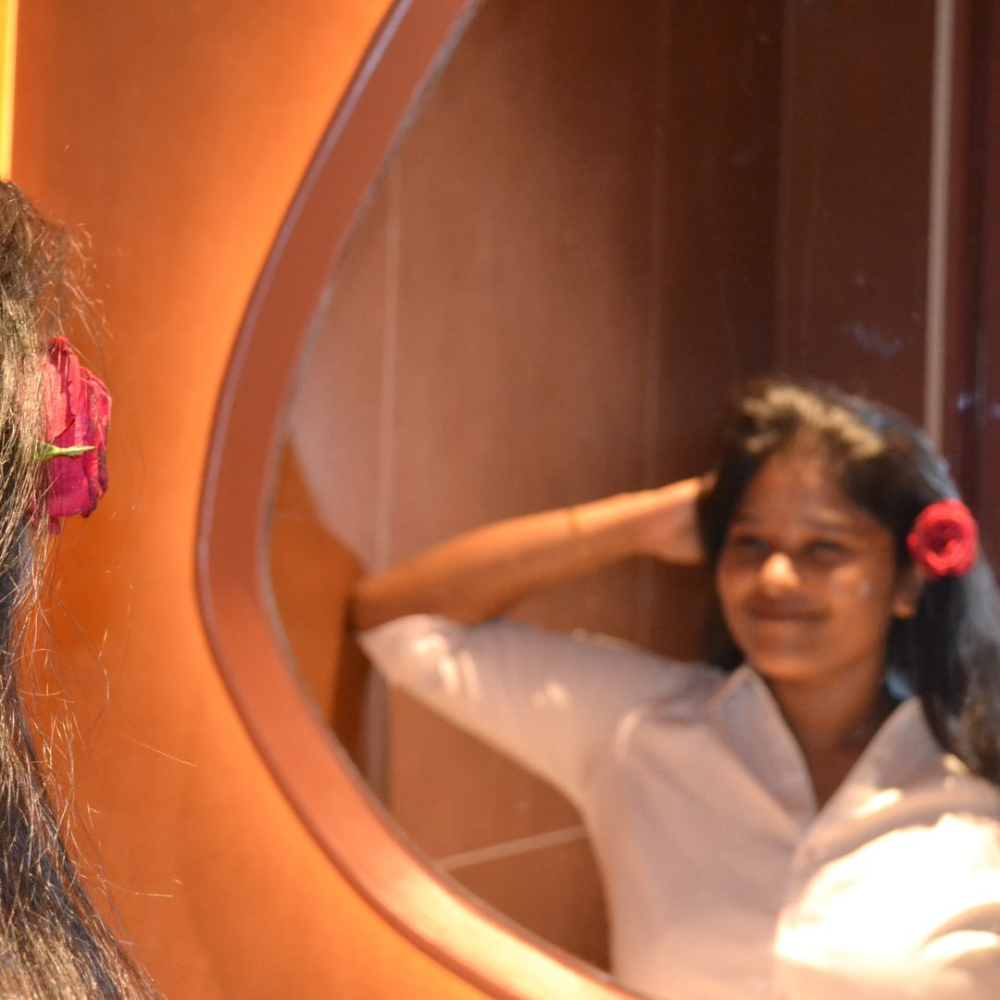

a small page for a very big moment
Today is all
about you.
I made you something. Begin when you’re ready.
starthere↓
the graduate
You did that.
All the hardwork, assignments, presentations, mid exams, sem exams, clubs, throwball president, tcd, shore, home coming and many more. You did it, ate it.
Class of 2026
CONGRATULATIONSyou brilliant humanthe new beginning
Hello, Accenture.
A new chapter with your name on it. May this job bring you the challenges that light you up, people who notice your magic. Hope your training went well. Hope you completed your project, and scored good.
the creator
And now, your
own little corner.
Your Instagram page is pretty good. But this is a space that’s all yours. A place to keep your memories, your thoughts, your energy.

dearbhavanaa
For the memories ✨a tiny pause
All okay?
Is your mood good?
Take a breath. This little corner is waiting for your good energy.
one more thing
There’s someone
who’s been cheering
for you very loudly.
PHOTO
♥
Hi again,
it’s me.
our very own archive
Some of my favourite us.
and the point of all this
“I hope you always know that I’m in your corner for the loud wins, the quiet days, and every beautiful thing in between.”
PK
one last thing
A small edit
for you.
“Bhavana if there is 1% chance that's good, if there 0% chance make it 0.01% I will take care of rest.”
With so much pride,
PK